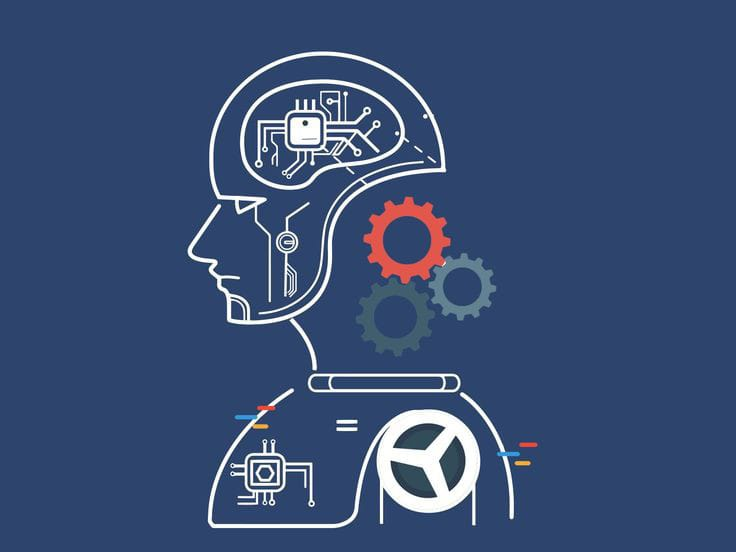

Understanding Machine Learning
Machine learning is a subset of artificial intelligence that focuses on building systems that learn from data. In this post, we explore the basics of machine learning and its applications in various fields.
What is Machine Learning?
At its core, machine learning involves creating algorithms that allow computers to recognize patterns in data and make decisions based on that data. The key feature of ML is that the system improves as it receives more data, rather than requiring manual reprogramming. Machine learning models are typically trained using large datasets, and through this training process, they "learn" to make decisions, classify data, or predict outcomes with increasing accuracy.Types of Machine Learning
Machine learning can be broadly categorized into three main types: Supervised Learning Description: In supervised learning, the algorithm is trained on labeled data. The model is provided with input-output pairs and learns the relationship between them. After training, the model can predict outputs for new, unseen inputs. Example: Spam email detection, where the system learns from labeled data (spam vs. not spam) to classify incoming emails. Unsupervised Learning Description: Unlike supervised learning, unsupervised learning involves training the model on data without predefined labels. The model must identify patterns or groupings within the data on its own. Example: Customer segmentation, where the algorithm groups customers based on buying behavior without prior labels. Reinforcement Learning Description: In reinforcement learning, an agent interacts with an environment and learns by receiving feedback (rewards or penalties). The model improves its decision-making strategy over time based on trial and error. Example: Game-playing AI, where an agent learns to play a game by receiving rewards for achieving certain goals (e.g., winning a round in a game).How Does Machine Learning Work ?
The process of machine learning typically involves several key steps: Data Collection: The first step is gathering relevant and sufficient data. The quality of the data directly impacts the model's performance. Data Preprocessing: Raw data is often messy, inconsistent, or incomplete. Data preprocessing involves cleaning and transforming the data into a format that can be used for training. Model Selection: Various machine learning algorithms (such as decision trees, neural networks, or support vector machines) are considered to find the most suitable model for the problem. Training the Model: The chosen model is trained on the data using a specific algorithm, adjusting its parameters to minimize errors. Evaluation and Testing: Once the model is trained, it is evaluated using new, unseen data to test its performance and generalization capabilities. Deployment and Maintenance: After the model is fine-tuned and performs well, it is deployed for real-world use. Ongoing maintenance and retraining with new data ensure the model continues to perform accurately over time.Applications of Machine Learning
Machine learning is reshaping industries and solving complex problems in various fields. Below are some key areas where ML is making a significant impact: 1. Healthcare Disease Diagnosis: ML models are used to diagnose diseases like cancer, heart disease, and diabetes by analyzing medical images, patient records, and genetic data. Drug Discovery: ML algorithms help identify potential drug candidates by analyzing vast chemical datasets, speeding up the discovery process. Personalized Medicine: Machine learning aids in creating customized treatment plans based on patient-specific data, including genetics and lifestyle. 2. Finance Fraud Detection: ML models analyze transaction data in real-time to identify fraudulent activity, reducing losses for financial institutions. Algorithmic Trading: Machine learning algorithms are used to analyze market trends and execute trades at optimal times. Credit Scoring: ML helps financial institutions assess creditworthiness by analyzing historical data and consumer behavior. 3. Retail and E-commerce Personalized Recommendations: Retailers like Amazon and Netflix use ML to recommend products or movies based on user preferences and past behavior. Inventory Management: Machine learning helps predict demand, optimize stock levels, and improve supply chain management. Customer Support: AI-driven chatbots, powered by ML, provide 24/7 customer support by understanding and responding to customer queries. 4. Transportation Self-Driving Cars: Autonomous vehicles use ML algorithms to interpret sensor data, identify objects, and make driving decisions in real-time. Route Optimization: Ride-sharing services like Uber and Lyft use machine learning to optimize routes for drivers, reducing wait times and improving efficiency. Traffic Prediction: ML helps predict traffic patterns, reducing congestion and improving city planning. 5. Manufacturing Predictive Maintenance: Machine learning helps predict when machines are likely to fail, allowing manufacturers to perform maintenance proactively and reduce downtime. Quality Control: ML models analyze production data to detect defects and anomalies, ensuring high-quality products. Supply Chain Optimization: By analyzing historical data, ML can forecast demand and streamline supply chain operations. 6. Natural Language Processing (NLP) Speech Recognition: Virtual assistants like Siri, Alexa, and Google Assistant use ML to recognize and interpret spoken language. Sentiment Analysis: Companies use ML to analyze customer reviews or social media posts to gauge public sentiment about products or services. Language Translation: ML-based translation systems, such as Google Translate, provide more accurate translations by learning from vast datasets of bilingual texts. 7. Entertainment Content Personalization: Streaming services like Netflix, Spotify, and YouTube use machine learning to recommend movies, songs, and videos based on user behavior. Content Creation: Machine learning can be used to generate new content, such as music or art, by learning from existing works. User Engagement: ML models help platforms understand user preferences, improving user engagement and retention.The Future of Machine Learning
The future of machine learning looks incredibly promising. As the availability of data and computational power increases, machine learning models are expected to become more powerful and capable. Some exciting areas of growth include: AI-powered Creativity: Machine learning will continue to drive creativity in art, music, and design, with AI systems generating original works based on learned patterns. Ethical AI: As ML systems become more integral to our lives, ensuring that these models are fair, transparent, and free from bias will be a critical focus. AI for Sustainability: Machine learning can be used to tackle global challenges like climate change by optimizing energy use, reducing waste, and advancing green technologies